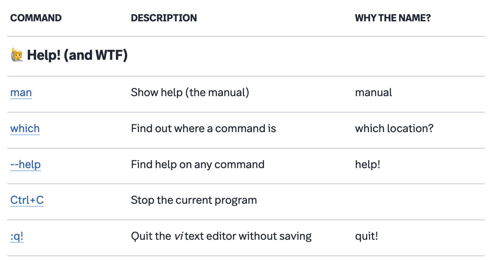
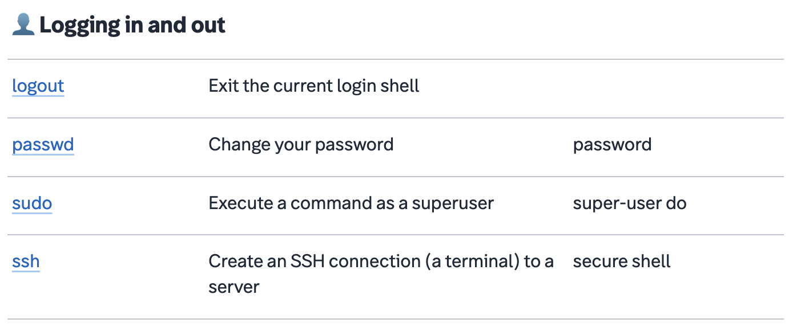
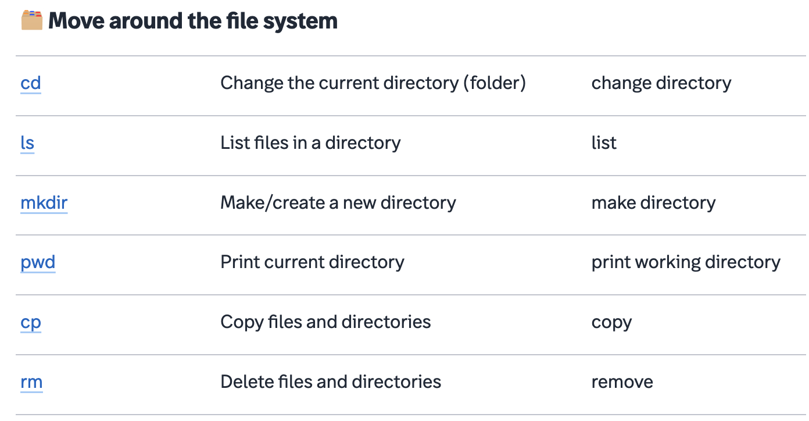
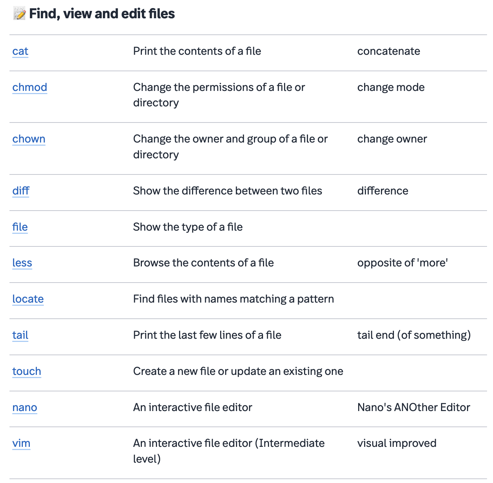
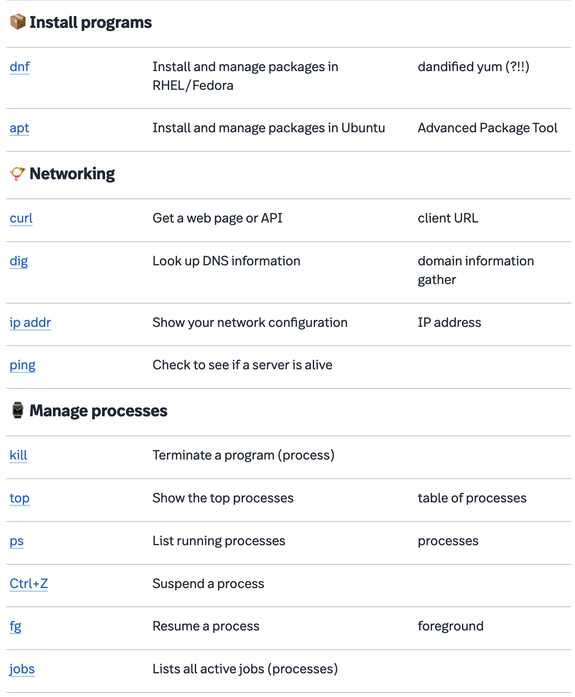
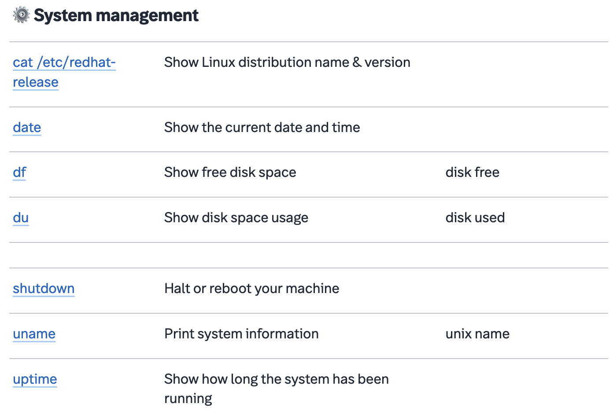

Before training a deep learning model, it is vital to understand your data. Is it sufficiently variable to cover the application being developed? There are so many factors that come into play here, including the quality of the ultrasound, and characteristics of the patient, such as age, gender, and BMI, which can all effect the size of the organ being imaged. Once the data is ready, you need to work with your echo specialist or radiologist on the best labeling and annotation procedure. It is an iterative process which is partly about the algorithms and partly about the data. Try one approach, train a model, and then give the data back to the echo specialist who will look again and may make further suggestions.